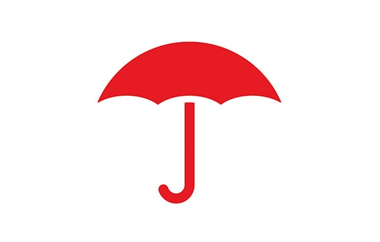
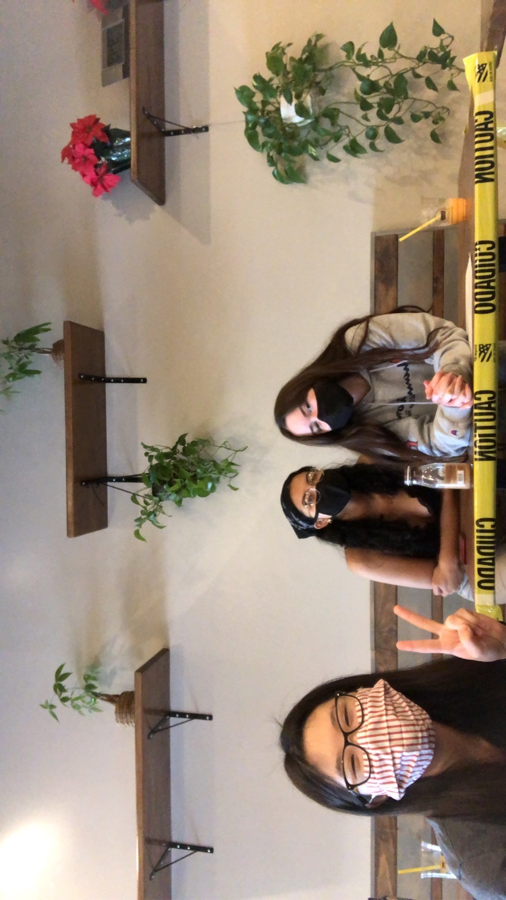
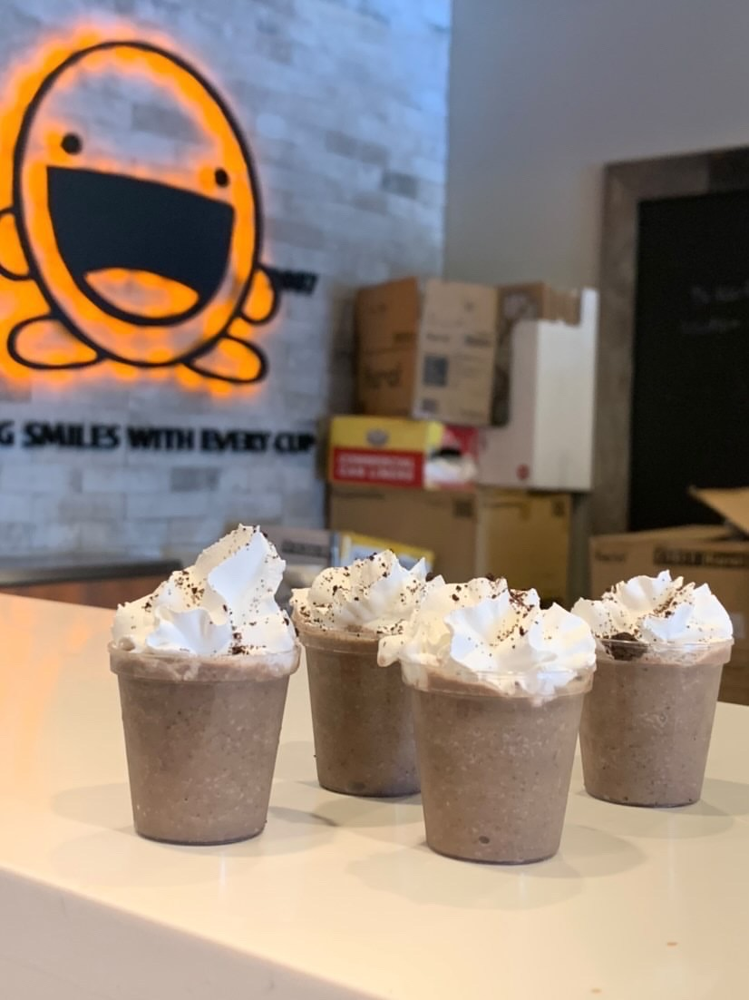
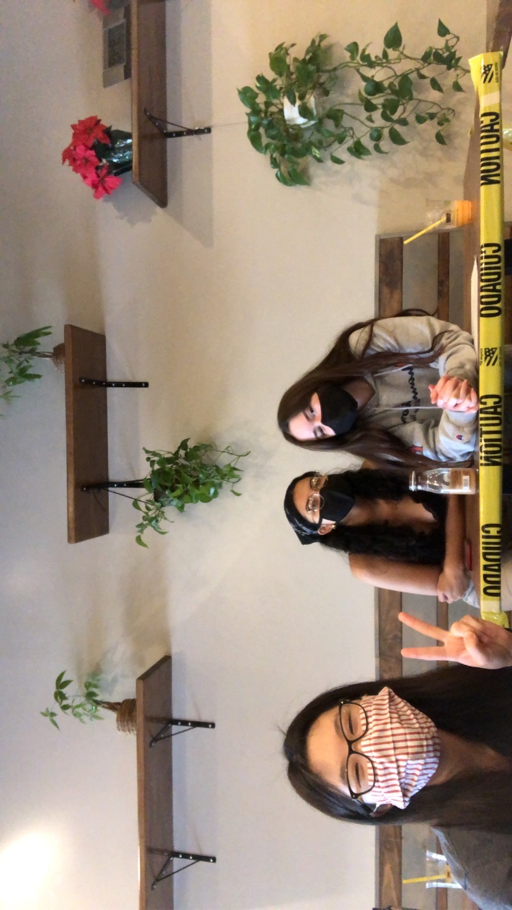
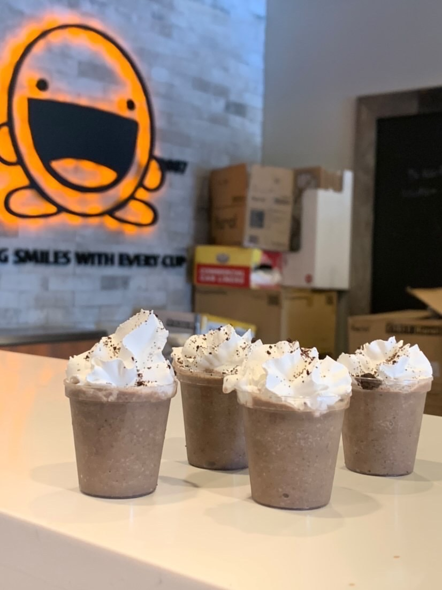

Charis Lee
Hello, my name is Charis Lee. I'm a second-year student at the University of California Riverside as a Business Administration major with a concentration in marketing. I have experience with Asian culture, specifically Korean culture. I also know a little bit of basic Spanish from high school. I work well with kids and adults alike, and I have great communication skills. I stay organized and can lead small groups of people, or larger groups if needed. I also have experience in training. I am a people person, so I am friendly and know how to be empathetic and talk to people.
I have taught private swim lessons for two summers, so I know how to teach one on one with children and communicate with their parents regarding scheduling, pricing, and what my plans are for the lesson. I also am currently a lead at a boba shop near the UC Riverside campus called Boba Tea House. I welcome customers and take orders. I help clean any messes to keep the store in a good condition. I make their drinks and, if needed, I can also help make food, tea, or boba itself. I train new hires and handle difficult customers. I independently organize their training and I’m responsible for their progress and any questions they may have. If there is a problem with stock, I’m responsible for alerting our owner and trying to find a solution. Over the summer, I interned at Travelers Insurance as a claim intern. It was a 10 week paid program where I got to walk through the claim process for all different types of claims: auto, property, and general liability for example. I got to work with leaders and meet with them. I led an interview about diversity within the company that I had to coordinate with my peers in order to accomplish. The interview was done live on Zoom in front of 100 people and recorded to be shared with all 30, 000 Travelers employees. We also presented to a board of judges about possible business ideas to improve Travelers. I got to research different facts and statistics for the project and put together a presentation about it. We were chosen from hundreds of applicants and we were whittled down to around 35 nationwide. I assisted with phone calls and tasks that claim handlers did not have the time to do. I went onto the field to look at property damage and help assess the damage then determine the value of the claim.
Although I have those experiences, my real interest lies in business and marketing. I find the different ways businesses can be successful interesting. My dad worked in the corporate world so when he tells me things about it, it fascinated me and the more I looked into the different opportunities and learned more about different business models, the more interested I became. I love learning the different strategies that are used to end up successful since so many are unconventional.
Experience
Travelers Claim Intern
• Lead interview about company diversity
• Collaborate and create presentation
• Assess property damage in the field
• Assist with claim related tasks
Education
University of California Riverside
Portfolio




 